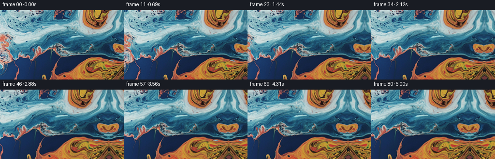
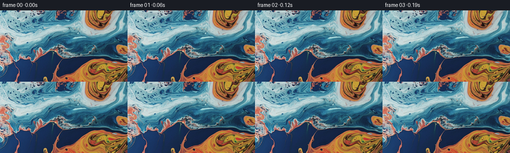

← 本轮 smoke 总览traex/GPT-5.6-Sol · 0002_s1
text · 256×144 · 16.0 FPS · 81 帧 · 状态 complete · 输出 tokens 9175
原始任务a close up of a blue and orange liquid, camera pans right
当前保存结果
已保存候选与代码修改
这里按时间展示外部捕获的候选，每份均可单独播放。保存新版本不等于完成视觉检查；下方工具证据记录实际看过的图。
候选 01 · 2026-11-09T01:52:28.858156+00:00 · 点开播放与检查图
inspection.png

transition_check.png

代码变化
--- 上一保存版本
+++ 本次保存版本
@@ -0,0 +1,129 @@
+"""Generate a slow rightward macro pan across the supplied liquid image.
+
+The input already contains the desired blue/orange liquid. This generator
+treats it as a section of a larger reflective liquid surface, extends that
+surface continuously beyond the right edge, and samples it with a smooth
+camera move plus a low-amplitude, long-wavelength fluid warp.
+"""
+
+from pathlib import Path
+
+import numpy as np
+from PIL import Image
+
+import artifact_io
+
+
+HERE = Path(__file__).resolve().parent
+W, H, N = 256, 144, 81
+
+
+def reflect_coord(v: np.ndarray, size: int) -> np.ndarray:
+ """Continuous edge-duplicating reflection (...,1,0,0,1,...)."""
+ period = 2.0 * size
+ q = np.mod(v, period)
+ return np.where(q < size, q, period - 1.0 - q)
+
+
+def reflect_index(v: np.ndarray, size: int) -> np.ndarray:
+ q = np.mod(v, 2 * size)
+ return np.where(q < size, q, 2 * size - 1 - q).astype(np.intp)
+
+
+def cubic_weights(f: np.ndarray) -> tuple[np.ndarray, ...]:
+ """Catmull-Rom interpolation weights at offsets -1, 0, 1, 2."""
+ f2, f3 = f * f, f * f * f
+ return (
+ -0.5 * f + f2 - 0.5 * f3,
+ 1.0 - 2.5 * f2 + 1.5 * f3,
+ 0.5 * f + 2.0 * f2 - 1.5 * f3,
+ -0.5 * f2 + 0.5 * f3,
+ )
+
+
+def sample_bicubic(image: np.ndarray, x: np.ndarray, y: np.ndarray) -> np.ndarray:
+ """Bicubic sample an RGB image, reflecting at all boundaries."""
+ x = reflect_coord(x, image.shape[1])
+ y = reflect_coord(y, image.shape[0])
+ ix = np.floor(x).astype(np.int32)
+ iy = np.floor(y).astype(np.int32)
+ wx = cubic_weights(x - ix)
+ wy = cubic_weights(y - iy)
+
+ out = np.zeros((*x.shape, 3), dtype=np.float32)
+ for j in range(4):
+ yy = reflect_index(iy + j - 1, image.shape[0])
+ row_weight = wy[j]
+ for i in range(4):
+ xx = reflect_index(ix + i - 1, image.shape[1])
+ out += image[yy, xx] * (row_weight * wx[i])[..., None]
+ return np.clip(out, 0.0, 255.0)
+
+
+def camera_progress(u: float) -> float:
+ """Mostly linear pan with gentle acceleration/deceleration."""
+ # Raised-cosine velocity integrated over the first/last 12% of the shot.
+ edge = 0.12
+ if u < edge:
+ # Integral of 0.5 - 0.5*cos(pi*u/edge), scaled to meet linear section.
+ raw = 0.5 * u - 0.5 * edge / np.pi * np.sin(np.pi * u / edge)
+ elif u <= 1.0 - edge:
+ raw = u - 0.5 * edge
+ else:
+ z = 1.0 - u
+ tail = 0.5 * z - 0.5 * edge / np.pi * np.sin(np.pi * z / edge)
+ raw = 1.0 - edge - tail
+ return float(raw / (1.0 - edge))
+
+
+def generate() -> np.ndarray:
+ source_u8 = np.asarray(Image.open(HERE / "first_frame.png").convert("RGB"))
+ if source_u8.shape != (H, W, 3):
+ raise ValueError(f"unexpected first-frame shape: {source_u8.shape}")
+ source = source_u8.astype(np.float32)
+
+ yy, xx = np.mgrid[0:H, 0:W].astype(np.float32)
+ frames = np.empty((N, H, W, 3), dtype=np.uint8)
+ frames[0] = source_u8 # contract: exactly pixel-identical, no resampling
+
+ duration = (N - 1) / 16.0
+ for frame_no in range(1, N):
+ u = frame_no / (N - 1)
+ seconds = u * duration
+
+ # A 54-pixel move is apparent but remains suitably slow for a macro pan.
+ pan = 54.0 * camera_progress(u)
+ world_x = xx + pan
+
+ # Broad coherent displacement: subtracting each phase's t=0 value
+ # guarantees a seamless onset from the supplied still. The magnitudes
+ # stay below a few pixels, so this reads as viscous drift rather than
+ # a digital distortion effect.
+ phase1 = yy / 22.0 + world_x / 91.0
+ phase2 = yy / 47.0 - world_x / 35.0
+ phase3 = world_x / 58.0 + yy / 31.0
+ ramp = 1.0 - np.exp(-seconds / 0.70)
+ dx = ramp * (
+ 1.25 * (np.sin(phase1 + 0.34 * seconds) - np.sin(phase1))
+ + 0.52 * (np.sin(phase2 - 0.21 * seconds) - np.sin(phase2))
+ )
+ dy = ramp * (
+ 0.90 * (np.sin(phase3 - 0.29 * seconds) - np.sin(phase3))
+ + 0.38 * (np.sin(yy / 19.0 + 0.25 * seconds) - np.sin(yy / 19.0))
+ )
+
+ rgb = sample_bicubic(source, world_x + dx, yy + dy)
+
+ # Very restrained caustic breathing, spatially smooth and color-neutral.
+ # It is zero at the first instant and never exceeds about one code value.
+ shimmer = 0.75 * ramp * np.sin(seconds * 0.72) * np.sin(
+ world_x / 43.0 + yy / 37.0
+ )
+ rgb = np.clip(rgb + shimmer[..., None], 0.0, 255.0)
+ frames[frame_no] = np.rint(rgb).astype(np.uint8)
+
+ return frames
+
+
+if __name__ == "__main__":
+ artifact_io.save(generate(), HERE)
可观测工具行为
命令 1 · 2026-11-09T01:51:07.745679+00:00/bin/bash -lc "cat GENERATION_RULES.md && printf '\\n---PROMPT---\\n' && cat prompt.txt"
exit 0 命令 2 · 2026-11-09T01:51:08.046348+00:00/bin/bash -lc "find . -maxdepth 2 -type f -printf '%p\\n' | sort && printf '\\n--- tools ---\\n' && (which ffmpeg || true) && (which python3 || true)"
exit 0 命令 3 · 2026-11-09T01:51:08.272549+00:00/bin/bash -lc "python3 - <<'PY'
from PIL import Image
im=Image.open('first_frame.png')
print(im.mode, im.size)
import numpy as np
x=np.array(im.convert('RGB'))
print('min/max/mean',x.min(),x.max(),x.mean((0,1)))
PY"exit 0 命令 4 · 2026-11-09T01:51:20.268167+00:00/bin/bash -lc "cat task_spec.json && sed -n '1,240p' artifact_io.py"
exit 0 命令 5 · 2026-11-09T01:51:20.724636+00:00/bin/bash -lc "python3 - <<'PY'
from PIL import Image
import numpy as np
im=np.asarray(Image.open('first_frame.png').convert('RGB')).astype(float)
# HSV-inspired classes blue/cyan B, orange O, dark D, light L, neutral .
r,g,b=im.transpose(2,0,1)
cls=np.full(r.shape,'.',dtype='<U1')
cls[(b>r*1.18)&(b>g*1.02)]='B'
cls[(r>b*1.25)&(r>g*1.05)]='O'
cls[im.mean(2)<50]='D'
cls[im.mean(2)>185]='L'
# majority downsample 4x8 => 32x18
for yy in range(0,144,8):
s=''
for xx in range(0,256,8):
vals,c=np.unique(cls[yy:yy+8,xx:xx+8],return_counts=True)
s += vals[c.argmax()]
print(s)
print('class counts',dict(zip(*np.unique(cls,return_counts=True))))
# spatial means 8x4 blocks
for yy in range(0,144,24):
print('row',yy, [tuple(np.round(im[yy:yy+24,x:x+32].mean((0,1))).astype(int)) for x in range(0,256,32)])
PY"exit 0 命令 6 · 2026-11-09T01:51:21.074413+00:00/bin/bash -lc "python3 - <<'PY'
from PIL import Image
import numpy as np
x=np.asarray(Image.open('first_frame.png')).astype(float)
# quantiles, gradients, border mismatch correlations
print('q',np.percentile(x,[0,1,5,10,25,50,75,90,95,99,100]))
g=np.sqrt(np.mean(np.diff(x,axis=1)**2)); gy=np.sqrt(np.mean(np.diff(x,axis=0)**2)); print('rms dx/dy',g,gy)
for k in [8,16,32,48,64,96,128]:
print(k,'horizontal overlap rms',np.sqrt(np.mean((x[:,k:]-x[:,:-k])**2)))
print('borders means L R T B',x[:,:8].mean((0,1)),x[:,-8:].mean((0,1)),x[:8].mean((0,1)),x[-8:].mean((0,1)))
PY"exit 0 命令 7 · 2026-11-09T01:52:21.147423+00:00/bin/bash -lc 'python3 generate.py'
exit 0 命令 8 · 2026-11-09T01:52:40.531115+00:00/bin/bash -lc "du -sh . frames pixels.npz index.html inspection.png && ls -l inspection.png transition_check.png pixels.npz index.html | awk '{print "'$5,$9}'"'"exit 0 命令 9 · 2026-11-09T01:52:40.818260+00:00/bin/bash -lc "python3 - <<'PY'
import numpy as np, hashlib
from PIL import Image
f=np.load('pixels.npz')['pixels']
# unpack and transpose
r=((f>>16)&255).astype(np.uint8);g=((f>>8)&255).astype(np.uint8);b=(f&255).astype(np.uint8)
a=np.stack([r,g,b],-1).transpose(2,0,1,3)
s=np.asarray(Image.open('first_frame.png'))
print('shape dtype',a.shape,a.dtype)
print('frame0 exact',np.array_equal(a[0],s), 'max',np.abs(a[0].astype(int)-s).max())
for i in [1,2,3,4,8,16,32,48,64,80]:
d=a[i].astype(float)-a[i-1].astype(float)
print(i,'step mae/rms/changed',np.abs(d).mean(),np.sqrt((d*d).mean()),np.any(d,2).mean())
# estimate each selected frame shift against first over valid overlap
for i in [8,16,32,48,64,80]:
best=[]
for sh in range(0,60):
aa=a[i,:,:256-sh].astype(float); bb=s[:,sh:].astype(float)
best.append(np.mean(np.abs(aa-bb)))
j=int(np.argmin(best));print('shift',i,j,best[j])
print('final border means',a[80,:,:8].mean((0,1)),a[80,:,-8:].mean((0,1)))
PY"exit 0 命令 10 · 2026-11-09T01:52:41.371989+00:00/bin/bash -lc 'python3 -m py_compile generate.py && git status --short'
exit 0 命令 11 · 2026-11-09T01:53:03.213627+00:00/bin/bash -lc "python3 - <<'PY'
from PIL import Image
import numpy as np
x=np.asarray(Image.open('first_frame.png')).astype(float)
# compare final 8 columns to 8-col blocks starting candidates, y reflected/roll
A=x[:,-8:]
out=[]
for flip in [0,1]:
for dy in range(-30,31):
B=np.roll(x[::-1] if flip else x,dy,axis=0)
for c in range(0,220):
C=B[:,c:c+8]
# direct rms and demeaned texture rms
rms=np.sqrt(np.mean((A-C)**2))
dm=np.sqrt(np.mean(((A-A.mean((0,1)))-(C-C.mean((0,1))))**2))
out.append((rms,dm,c,dy,flip,C.mean((0,1))))
print('direct')
for z in sorted(out)[:15]: print(z[:5],z[5])
print('demean (with mean corrections)')
for z in sorted(out,key=lambda q:q[1])[:15]:print(z[:5],z[5])
PY"exit 0 保存候选 1 份；完成命令 11 次；可验证图片返回 0 张。原始 API 响应与完整日志保留在本地。